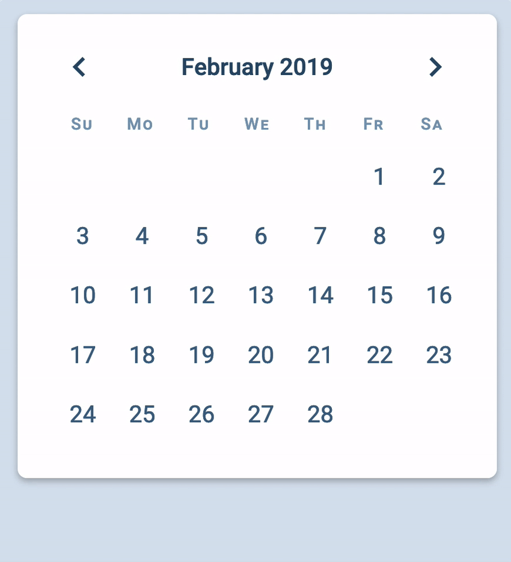

You can create a Datepicker for any month of any year. The next thing is to allow users to switch between months with the previous and next buttons.
For the buttons to work, we need to add an event listener to .datepicker__buttons.
Adding the event listener
If you recall from the previous lesson, we created the Datepicker this way:
// Add the datepicker into the DOM
form.appendChild(createDatepicker(date))
We don’t want to ask users to create the event listeners themselves. We want to create the listeners for them. To do this, we create event listeners inside createDatepicker.
Event listeners can only be added to Nodes. This means we can only create an event listener after creating the datepicker’s innerHTML.
When a user clicks on the next button, we want to show next month’s calendar. This means we must:
Change the textContent and datetime attribute of the year-month indicator
Create a new date grid
previousNextButtons.addEventListener('click', event => {
if (!event.target.matches('button')) return
if (event.target.matches('.datepicker__prev')) {
// Show previous month
}
if (event.target.matches('.datepicker__next')) {
// Show next month
}
})
Changing the year-month indicator
We need to know what’s the current year-month on the Datepicker. We can get this information from the datetime attribute.
if (event.target.matches('.datepicker__next')) {
const time = datepicker.querySelector('.datepicker__year-month').firstElementChild
const datetime = time.getAttribute('datetime')
console.log(datetime)
}
We need to create a Date from this datetime attribute. The simplest way is to use new Date with this datetime attribute value.
if (event.target.matches('.datepicker__next')) {
const timeEl = datepicker.querySelector('.datepicker__year-month').firstElementChild
const datetime = timeEl.getAttribute('datetime')
const currentDate = new Date(datetime)
console.log(currentDate)
}
This works. But you should try not to create dates with date strings. Things will break if you make a small mistake. You should always create dates with the arguments method. I wrote about this back in “Setting a specific date” lesson.
To create a date with arguments, we can create a new function called datetimeToDate. This name of this function explains we’re converting a datetime attribute into a Date object.
const datetimeToDate = datetime => {
// ...
}
We know the datetime attribute has the format: YYYY-MM (like 2019-02). If we split the datetime by -, we can get the year and month easily.
You should be able to write the code for the previous button on your own. It uses the same concept.
if (event.target.matches('.datepicker__previous')) {
// 1. Find out what's the currently selected month
const time = datepicker.querySelector('.datepicker__year-month').firstElementChild
const datetime = time.getAttribute('datetime')
const currentDate = datetimeToDate(datetime)
// 2. Figure out what's the previous month
const year = currentDate.getFullYear()
const month = currentDate.getMonth()
const targetDate = new Date(year, month - 1)
// 3. Update the year-month indicator
const targetMonth = targetDate.getMonth()
const monthName = monthsInAYear[targetMonth]
const datetimeMonth = (targetMonth + 1).toString().padStart(2, '0')
time.textContent = `${monthName} ${year}`
time.setAttribute('datetime', `${year}-${datetimeMonth}"`)
// 4. Update the date-grid
const dategrid = datepicker.querySelector('.datepicker__date-grid')
dategrid.innerHTML = createDateGridHTML(targetDate)
}

Cleaning up the code
At this point, you’ll notice we do two things when a user clicks the previous or next button.
Change the <time> element’s textContent and datetime attribute
Change the date grid
To change these two things, we need to find the target date. Once we have the target date, we can use functions to change the time element and date grid.
Getting the current date
We used these get the current date in both if statements.
Also, did you notice we only used monthsInAYear inside createYearMonthIndicatorTimeElement? Let’s put monthsInAYear inside this function to make the code neater.